Chapter 2 · the app
App Screens — Ben's design, working
The app at /figma-app is the founder's Figma file rebuilt as a navigable offline PWA — every screen from his design exists as a real page, and the battle screens run the real engine (state in localStorage["rwf.figma.v1"]). Gold theme by default, lime toggle in the status bar, hash router, installable, fully offline via service worker.
The screenshots below come from the two headless E2E walks that play the entire product (e2e.mjs: onboard → create → battle → power-ups → result → rematch → seasons → profile; e2e-daily.mjs: the multi-day danger-zone arc with time travel). If a screen below exists, a test walked through it.
Index / splash
demo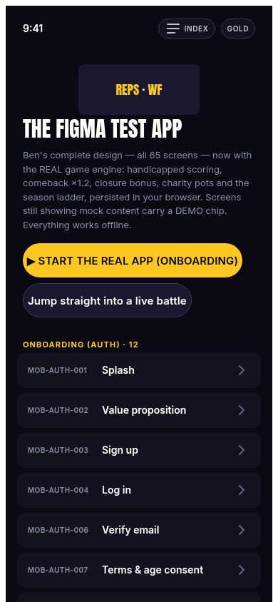
What. First paint: wordmark, tagline, the gold/lime theme toggle — the entry to onboarding.
How it works. Hash router (#/auth-008 style routes matching Ben's Figma frame names). The theme toggle flips data-theme="gold" — see Design System for what that means.
proven by: e2e.mjs step 1 — "index renders", "theme toggle present"
Onboarding — name → tier → in
demo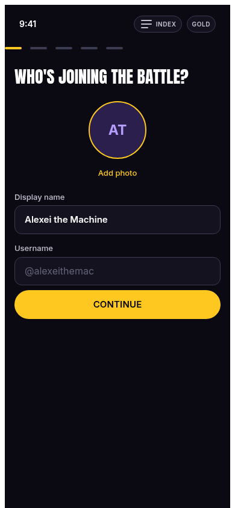
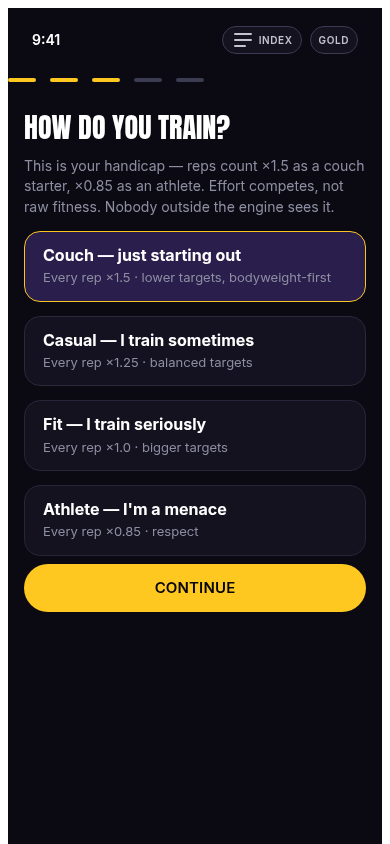
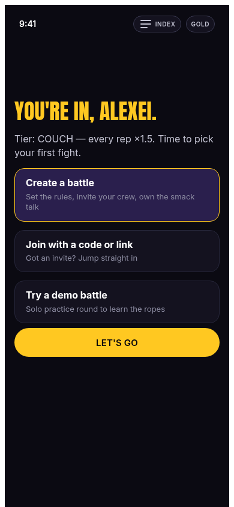
What. Three screens: pick a display name (avatar initials derive live), pick a fitness tier (couch / casual / fit / athlete — the handicap decision), done.
How it works. Draft state accumulates then persists the player object to rwf.figma.v1. The tier chosen here is the multiplier applied to every rep this player ever logs (see Game Rules).
proven by: e2e.mjs — initials live-update, tier selectable, player persisted, greeting by name
Home — battles list
demo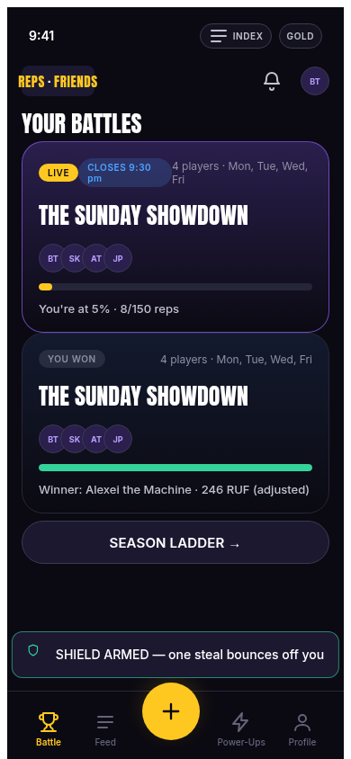
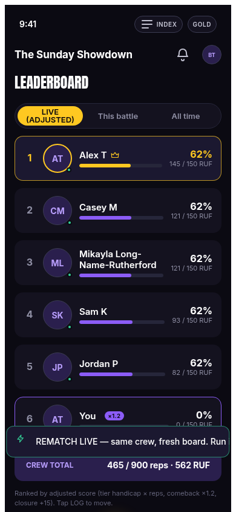
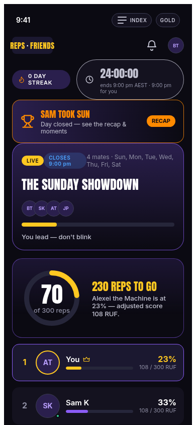
What. Your battle cards: name, target, days, live standings snapshot, temporal state (which play day, when it closes). Empty state → create your first battle.
How it works. Renders from the matches array in state; each card recomputes its countdown chip via the daily layer, so the home screen is always temporal-state aware. The 6-player shot is the deliberate overflow/edge-case test from the design audit.
proven by: e2e.mjs home asserts · e2e-daily.mjs temporal chip
Create battle
demo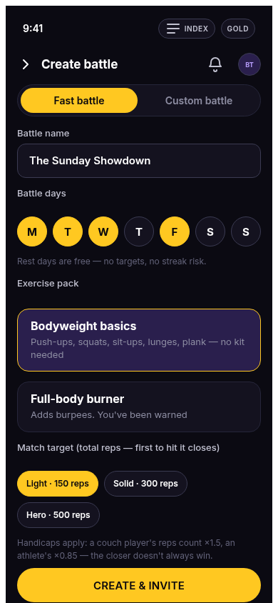
What. Name the battle, pick play days (week chips), pick a target preset.
How it works. Creates a match through the real engine: createMatch(config, players) with you + 3 demo mates (the demo roster), status open, and generates a CREW-XXXX code — the bridge token the bots use (link CREW-…).
createMatchproven by: e2e.mjs — "Light target = 150 reps", "crew code generated", "crew = you + 3 mates"
Waiting room
demo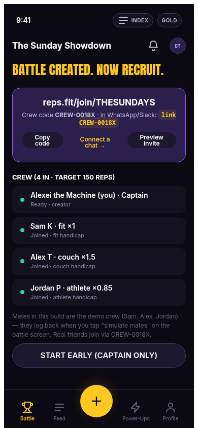
What. The pre-match lobby: who's in, the crew code, how mates join from WhatsApp/Slack, and a START EARLY button.
How it works. The share card shows the exact bot grammar (link CREW-XXXX) — the app↔bot bridge is a shared code, not a shared login (state unification is tracked in Status → T5). START EARLY flips the match to live immediately.
proven by: e2e.mjs — code shown matches state, START EARLY → live
Battle live
demo
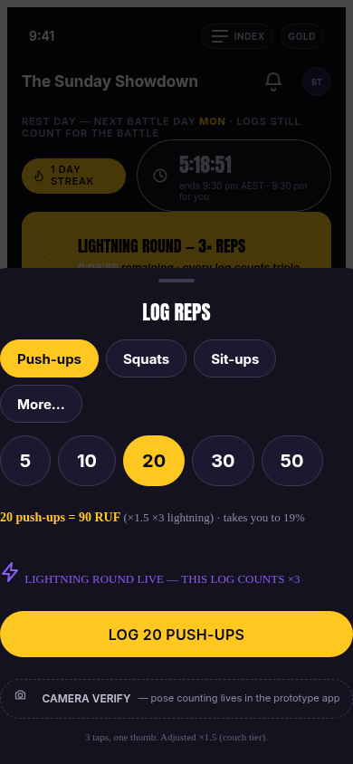
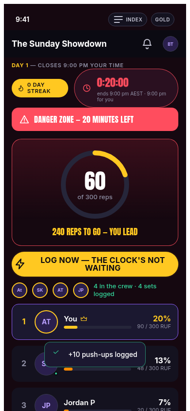
What. The main screen: your progress ring (raw / target), the full leaderboard (adjusted score + verified %), the dual-clock countdown, comeback banner, danger-zone chrome, the big LOG button and the power-up button.
How it works. Leaderboard rows come from engine.standings(state) — the same function the bots use for their standings card. The ring tracks your raw reps against target; the board sorts by adjusted. Countdown + DZ chrome from the daily layer ticker (see Game Rules → danger zone).
standings · daily.js applyDzChromeproven by: e2e.mjs — 4 standings rows, ring shows 0→20 after log, countdown ticking, no comeback banner until eligible
Log sheet — ≤3 taps
demo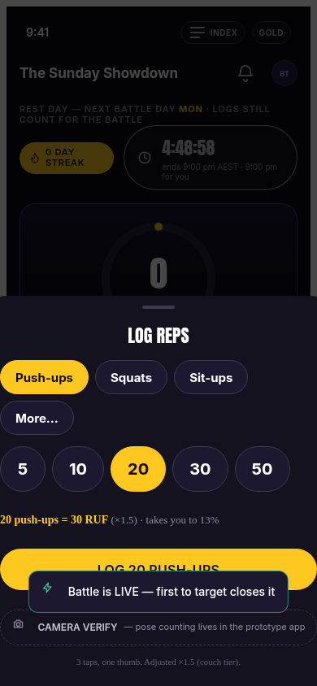
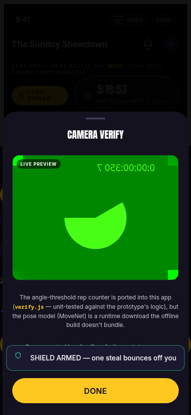
What. The core loop surface: tap LOG → tap a rep count chip → tap the CTA. Done, mid-workout, with sweaty hands.
How it works. The sheet shows your live conversion ("×1.5" for couch — what those reps are worth) and the CTA text mirrors the selection ("LOG 20 PUSH-UPS"). Confirming chains the engine's tag functions — applyComeback then applyLightning — appends the entry, and if the raw total crosses the target the match closes right there. Camera verify is offered inline for supported exercises.
logRepsAtproven by: e2e.mjs — sheet opens, conversion shows ×1.5, CTA reflects selection, entry lands in state, ring updates
Power-up surfaces
live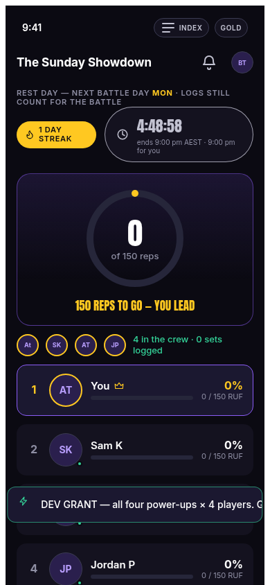
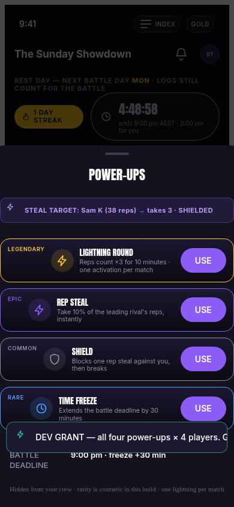
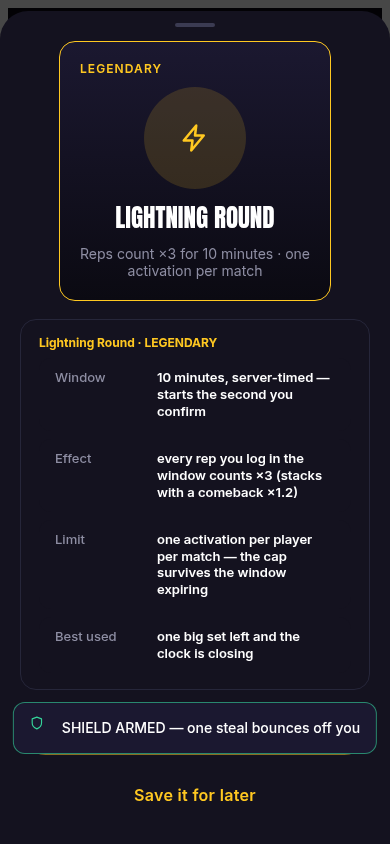
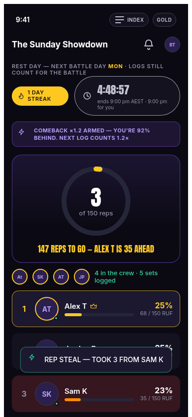
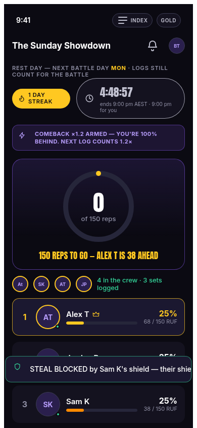
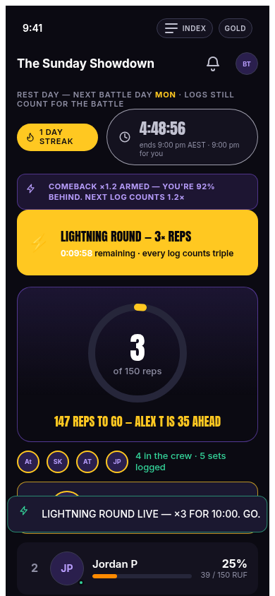
What. The full power-up journey: discover the button → open the arsenal → inspect a card → activate → feel it in toasts and on the live board.
How it works. All mechanics are specified in Game Rules → power-ups (×3/10min, 10% steal, shield-block, +30min freeze). The UI layer adds the feedback: steal shows a preview against the current leader before committing; a blocked steal explains that the shield was consumed and the card kept; lightning leaves a persistent countdown on the battle screen while the window is open.
activatePowerUp / stealPreviewproven by: e2e.mjs FLOW-05 walk — steal, blocked steal, lightning window all asserted
Result + charity pot
demo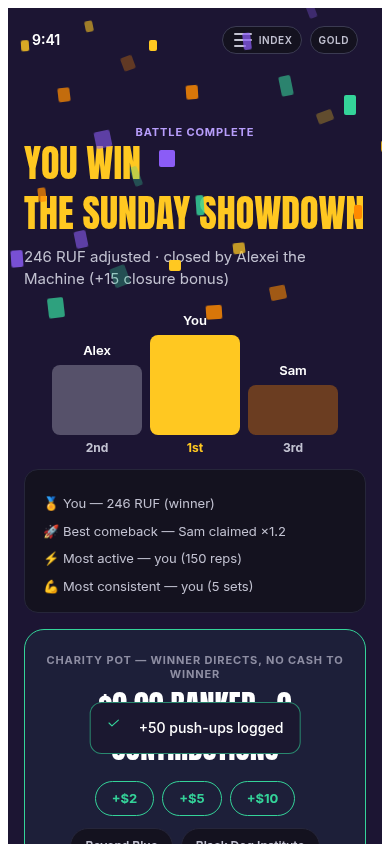
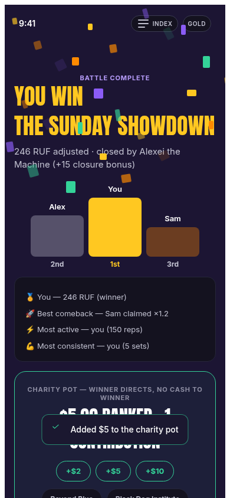
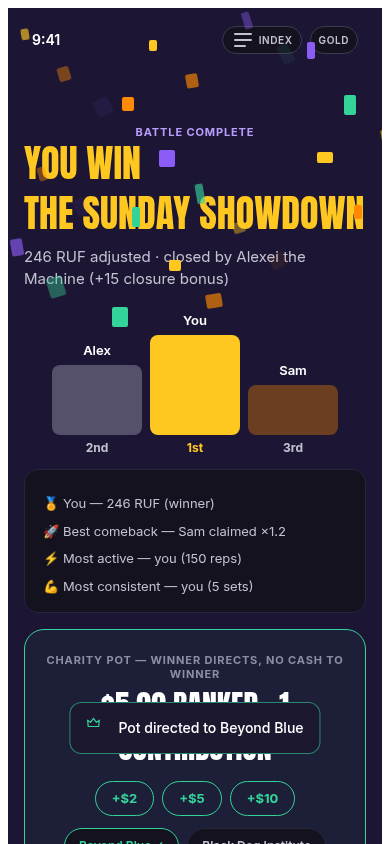
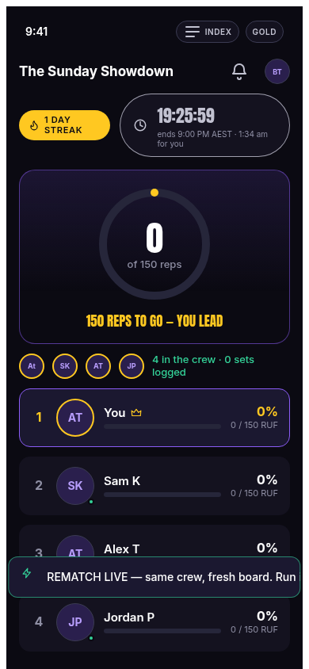
What. The finale: final standings with medals, the closure bonus applied, the charity pot total, the winner's designation flow, and the one-tap REMATCH.
How it works. Result = finalStandings() (bonus applied, re-ranked) with confetti + count-up finale (motion budget: 1200ms — see Design). The pot panel shows the ledger total and, for the winner, the designation picker. Rematch creates a new match with the same roster and rules — "run it back" also exists as a bot command (rematch).
finalStandings / rematchStateproven by: e2e.mjs — result renders, rematch goes live with roster carried
Profile + season ladder
demo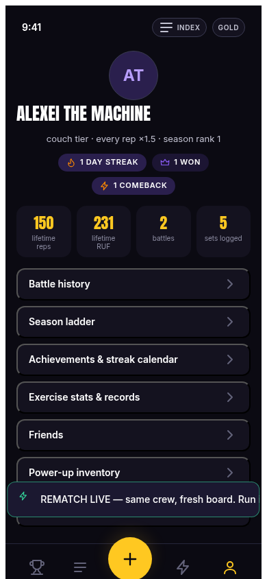
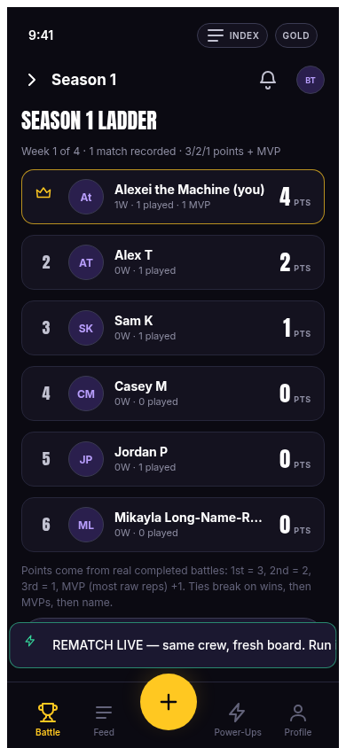
What. Profile: identity, tier (changeable between matches), match record. Season ladder: the 4-week points table with MVP counts and division movement.
How it works. The ladder is seasonLadder() over recorded match results (3/2/1 + MVP — see Game Rules → seasons). The profile doubles as the settings surface for HR straps (resting HR / age → Karvonen) in the first-party app build.
proven by: e2e.mjs ladder + profile asserts
The wider design coverage
demoBeyond the E2E journey, a 67-screenshot walk covers every frame in Ben's file — including screens the flow doesn't reach: wagers, corporate, social, edge cases, offline.
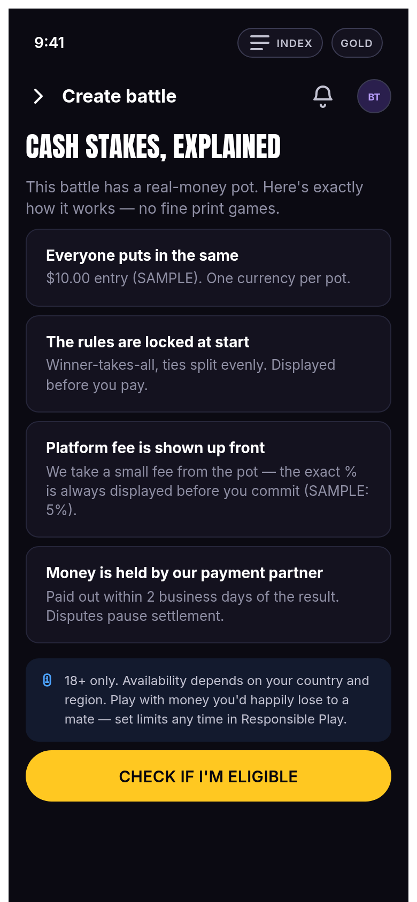
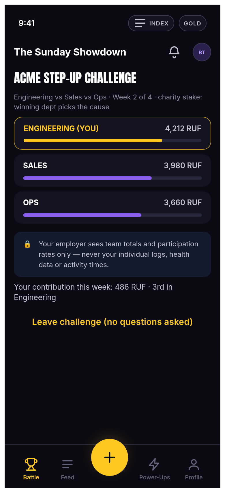
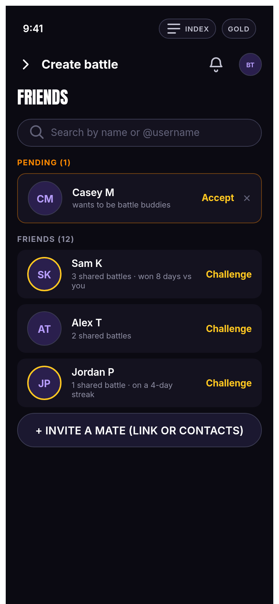
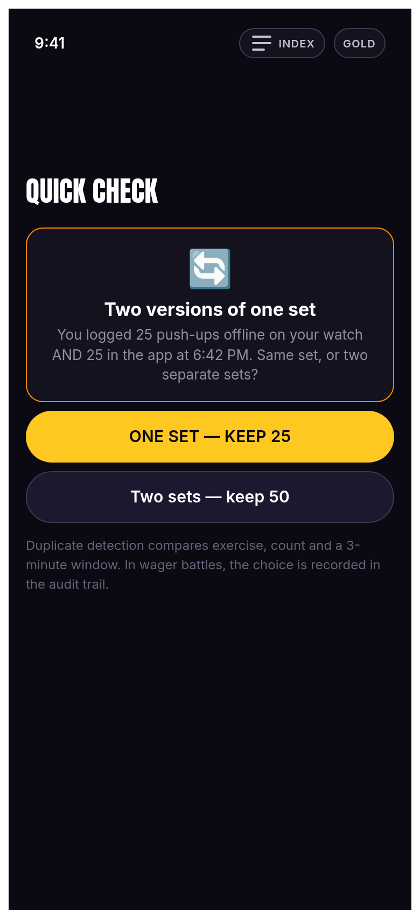
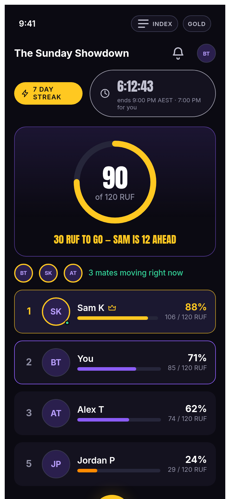
How it works. Every Figma frame was extracted with exact fills and bounding boxes from figma/assets/file.json and rebuilt as HTML/CSS (lane F4). The offline shot proves the service worker: with the network cut, the app still boots from cache — it's installable as a PWA (manifest.webmanifest + sw.js).
The full walk lives in apps/screenshots/figma-app/ (67 PNGs: auth-*, battle-*, create-*, corp-*, edge-*, home-*, integ-*, join-*, log-*, profile-*, pwr-*, result-*, set-*, social-*, wager-*, _offline-*) — the wiki ships the highlights.
proven by: the walk itself + e2e.mjs offline section
The first-party app (/app)
liveA second app exists — ours, not Ben's — shipped at rwf.qalarc.com/app. It carries the verification lane (camera + HR) and the synced state demo.
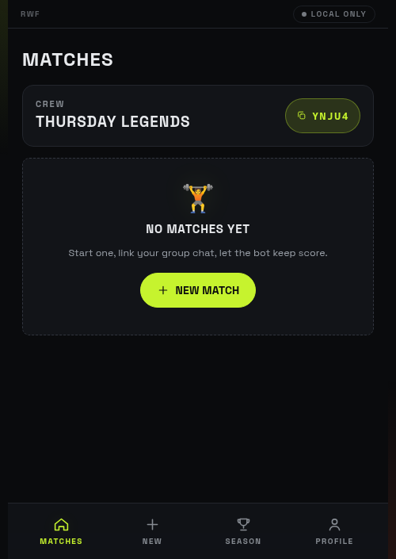
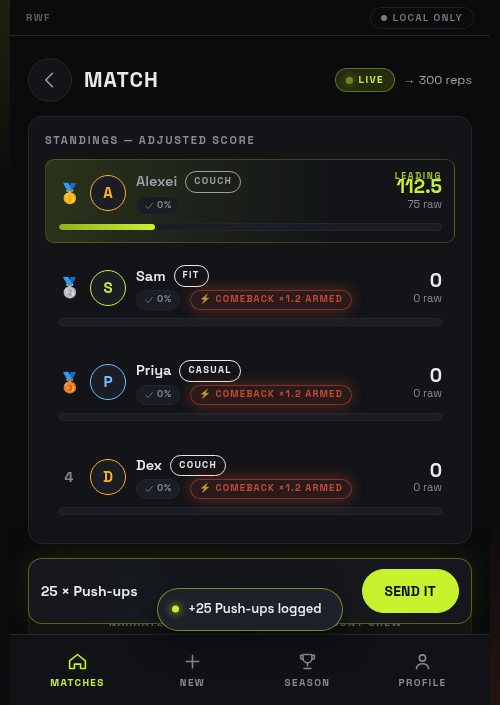
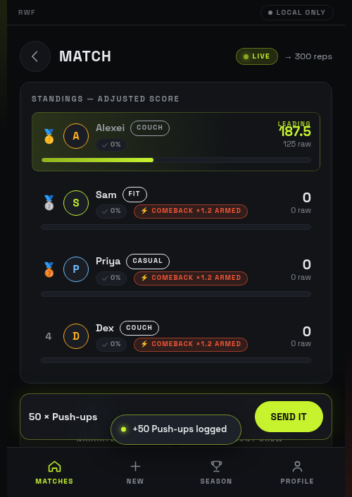
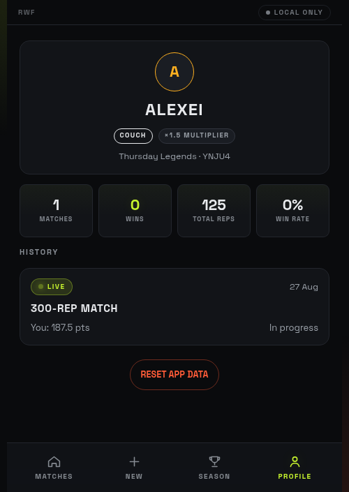
How it works. Built from apps/web/src (bundled with Bun, deployed to /app), it shares the same engine port and adds the verifier surfaces: the camera sheet (MoveNet) and BLE HR pairing that feed verified:true + avgHrrPct entries — the wiki's Verification chapter documents those mechanics. The figma-app remains the design reference; this is the shipping surface.
proven by: 35 browser checks (docs/17) · polish screenshots above